A témakör célja, hogy a tanuló megismerkedjen a Trello nevű online, listakészítő alkalmazással.
A Trello-ban lehetőségünk van különböző csoportokhoz, szervezetekhez különböző kezelési egységeket létrehozni. Ezeket nevezzük munkatereknek (workspace).
Hogy megnézzük a munkatereinket kattintsunk a "Munkaterek" fülre.
Új munkatér létrehozásához kattintsunk a "Trello" logóra, majd a "Munkaterek" melletti +-jelre. Értelemszerűen töltsük ki a megnyíló űrlapot.
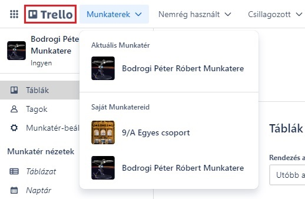
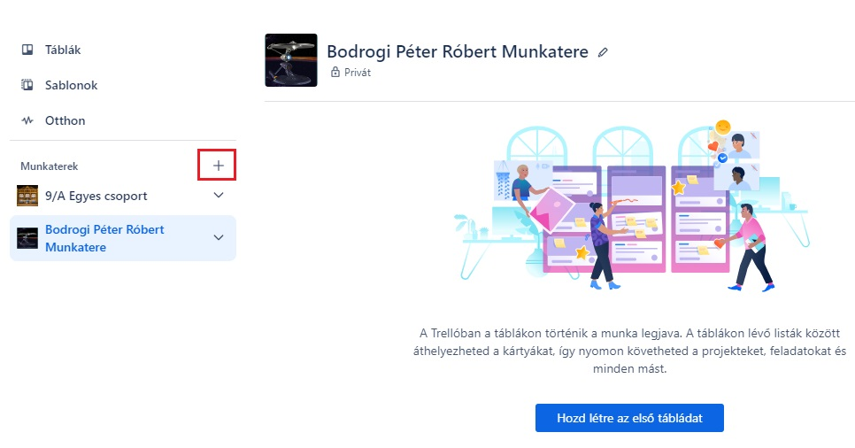
A tábla (A) az a hely, ahol nyomon követheted az információkat - akár nagy léptékű projektek, csapatok és munkafolyamatok esetén is. Új webhelyet indítasz, értékesítéseket követsz nyomon, vagy a következő irodai bulit szervezed? A Trello-táblák segítségével a legapróbb részletekre kiterjedően rendszerezheted a feladatokat, és ami a legfontosabb: együttműködhetsz a munkatársakkal.
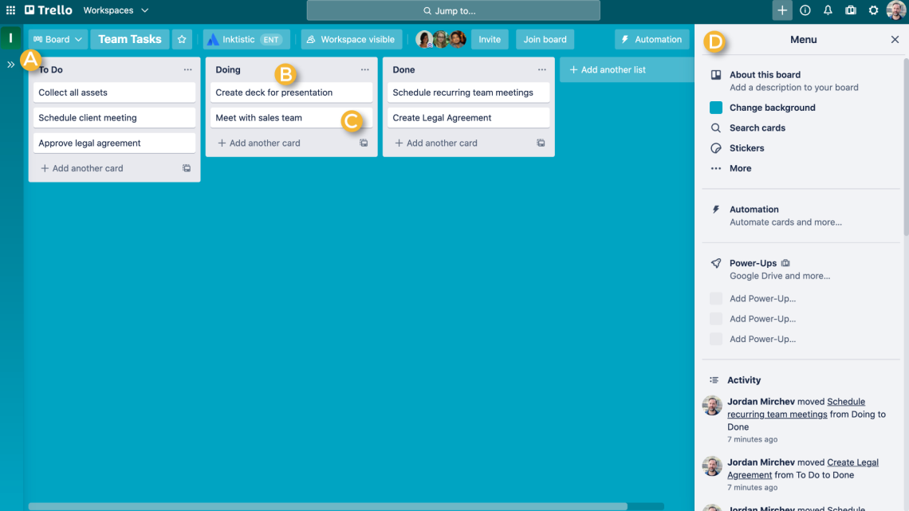
A Trello-tábla jobb oldalán található a menü (D) - a tábla irányítóközpontja. A menüben kezelheted a tagok táblajogosultságait, módosíthatod a beállításokat, rákereshetsz a kártyákra, engedélyezheted a Power-Upokat, és automatizációkat hozhatsz létre. A menü aktivitással kapcsolatos híreket tartalmazó részében a táblához kapcsolódó összes aktivitást megtekintheted. Szánj rá egy kis időt, hogy megismerd a menüben elérhető funkciókat!
A listák (B) kártyákat, konkrét feladatokat vagy információkat tartalmaznak, amelyeket a rendszer az előrehaladási fokuk szerint rendez sorba. A listákkal munkafolyamatokat hozhatsz létre, ahol a kártyák végighaladnak a folyamat elejétől a végéig, de akár egyszerűen az ötletek és az információk nyomon követésére is használhatod őket. Egy táblához végtelen számú listát társíthatsz, amelyeket tetszés szerint rendszerezhetsz és nevezhetsz el.
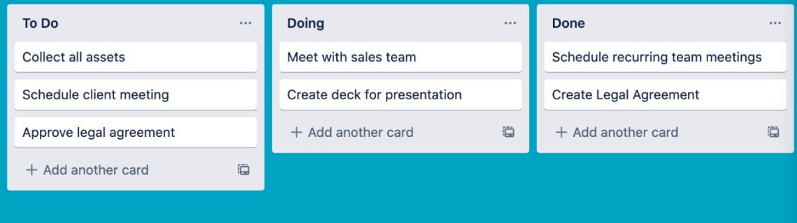
A tábla legkisebb, de legrészletesebb egysége a kártya (C). A kártyák képviselik a feladatokat és az ötleteket. Ezek lehetnek tennivalók (például egy megírandó blogbejegyzés), vagy olyasvalami, amit nem szabad elfelejteni (például a vállalati szabadságolási szabályzat). Új kártya hozzáadásához kattints bármelyik lista alján a „Kártya hozzáadása…” lehetőségre, és add meg a kívánt címet, például „Új marketingmenedzser alkalmazása” vagy „Blogbejegyzés megírása”.
Ha szeretnéd a saját igényeidhez igazítani a kártyákat, és különböző hasznos információkat elhelyezni rajtuk, egyszerűen kattints a kívánt kártyára. Az előrehaladás megjelenítéséhez húzd a kártyákat a listákra. A táblákhoz korlátlan számú kártyát adhatsz.
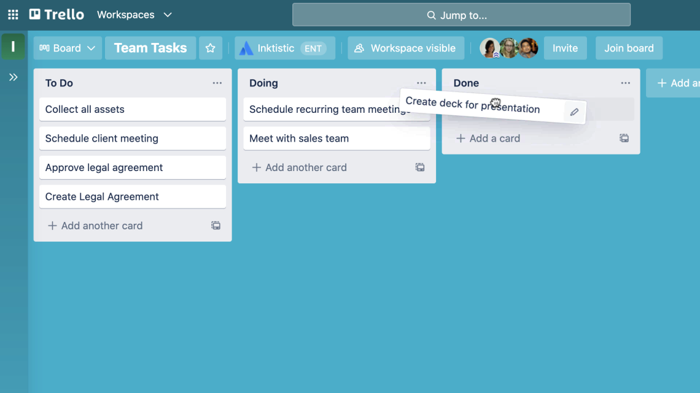
Minden felhasználónak létezik egy úgynevezett alapértelmezett munkatere (workspace), amit a regisztrációkor kap. Ebben a munkatérben is hozhatunk létre a táblákat a különböző projektekhez.
Ezt két helyen tehetjük meg.
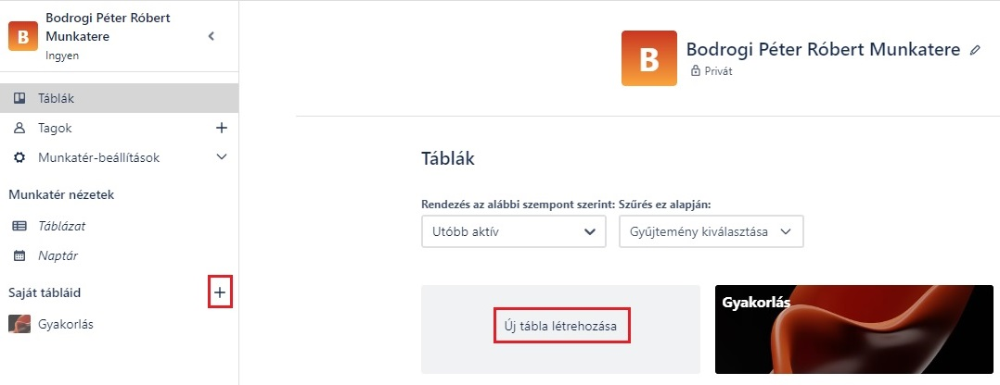
Ezután állítsuk be a tábla láthatóságát, ami lehet Személyes, Munkatér (ez az alapértelmezett) vagy Nyilvános.
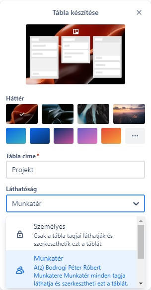
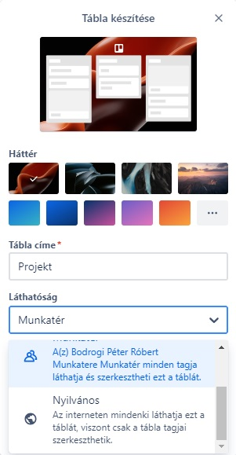
Látható, hogy beállíthatjuk még a táblánk hátterét is a hármaspontra kattintva.
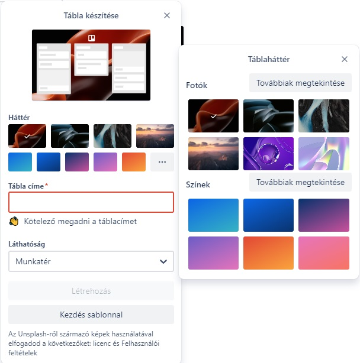
Ha megnyitjuk a táblánkat, akkor a jobb felső sarokban található "Megosztás" gombra kattintva hívhatunk meg embereket.
Ezt megtehetjük a munkatérbe felvett tagokkal, vagy meghívhatunk külsős embereket is e-mail címmel, vagy egy meghívó link segítségével.
Beállíthatjuk az emberek jogosúltságát is.
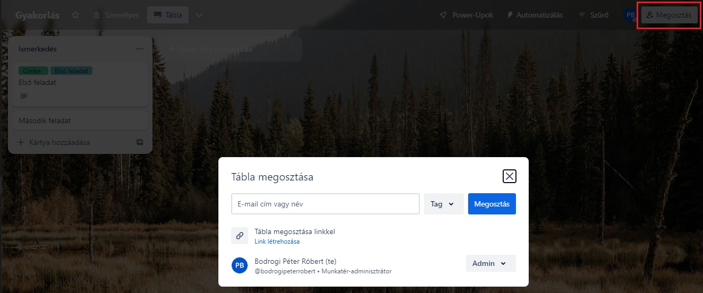
Kattintsunk az "Újabb lista hozzáadása" gombra.
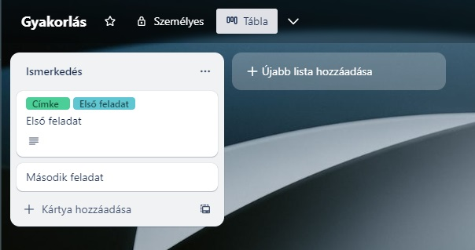
Ezután a "Kártya hozzáadása" gombra kattintva helyezhetünk el rajta egy új kártyát.
A hármaspontra kattintva újabb lehetőségeink lesznek a listával való munkára.
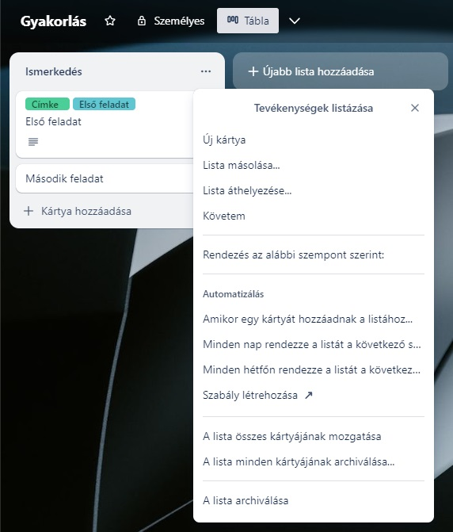
Ha a kártány elhelyezett ceruzára kattintunk, akkor a kártya úgynevezett előlapját szerkeszhtejük.
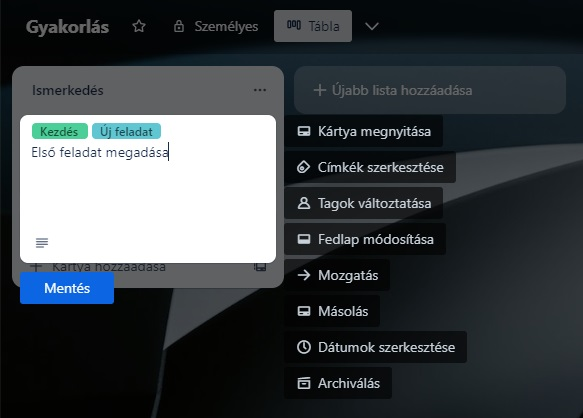
Ha egy kártyára kattintunk, akkor kapjuk a kártya úgynevezett hátoldalát, melyen számos beállítást szerkeszthetünk.
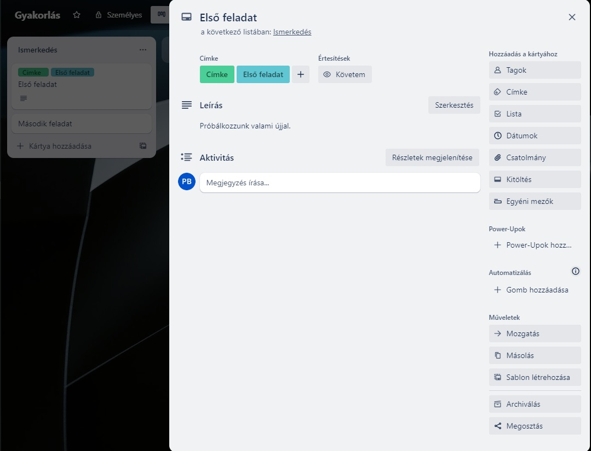
A Power-Up egyfajta beépülő modul a Trello-ban. Segítségével kiterjeszthetjük a funkciókat, vagy újakat adhatunk hozzá.
Meghívása három helyen lehetséges:
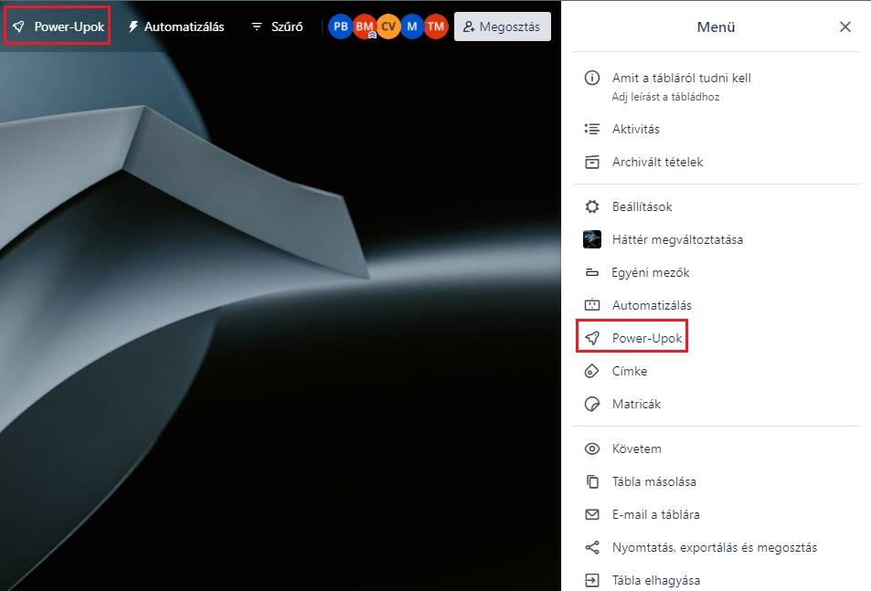
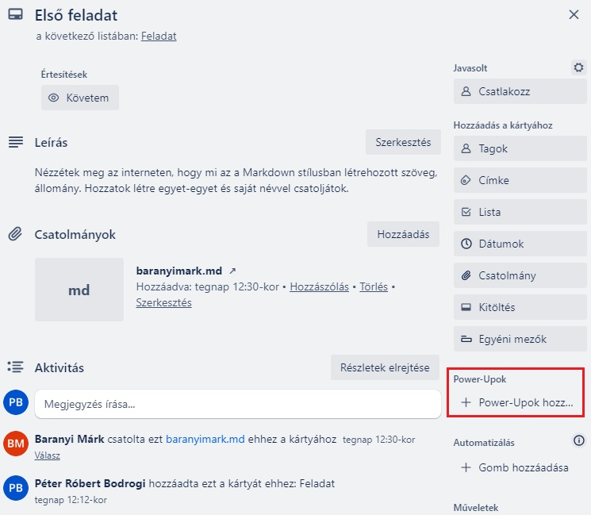
Az első esetben az egész táblára, míg a második esetben csak az adott kártyára állítjuk be.